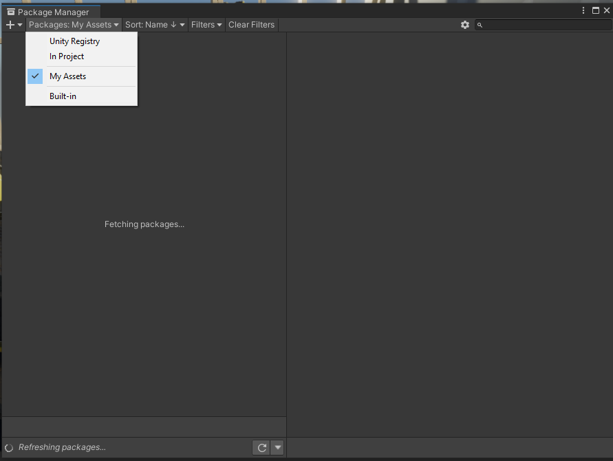
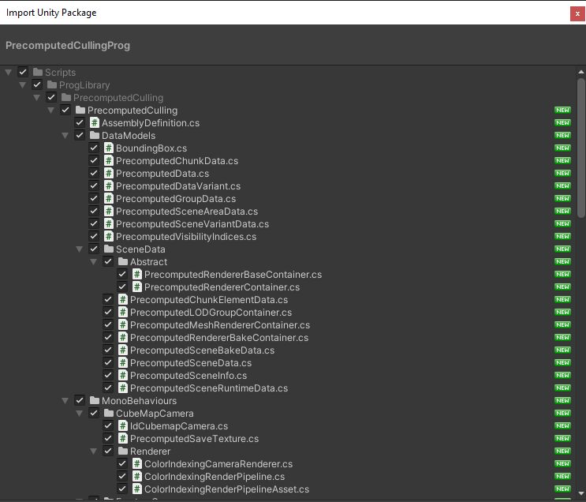

Quick Start Guide
We will start by creating a new project, but you can also use your existing project.
New Project
In the Unity Hub, click on "Create New Project",
Select "3D Sample Scene (URP)" and give it a name,
Click Create project,
note: You can also use your existing project.
Install Precomputed Culling via Package Manager
- Open package manager, by pressing
Window > Package Manager, - In the top dropdown change Package to My Assets,
- Select
Precomputed Cullingand press Install, - Done.

Install Precomputed Culling via Unity Package
- Locate the
PrecomputedCullingProg.unitypackagepackage in file explorer. - Double click on the package,
- In the new opened window press
Import - Done.

Setup Precomputed Culling
- Open the main scene where you want to initialize your setup,
- In the top menu, press Tools->Precomputed Culling->Setup,
- Optional - Create new GameObject, and add
PrecomputedAreacomponent to it.
- Optional - Create new GameObject, and add
- Adjust Precomputed Volume/Area to match the play area of your player (note you can have multiple areas),
- Adjust cell density and camera control (Find the best setting between bake Quality and Bake time and performance).
- Start baking either in Tools->Precomputed Culling->Bake or in Area
- Wait for bake to finish
- Enjoy an increase in performance